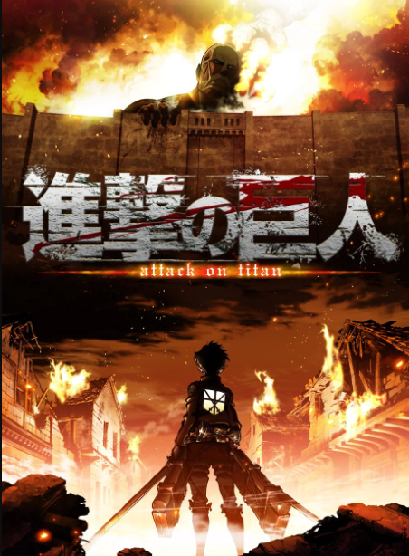
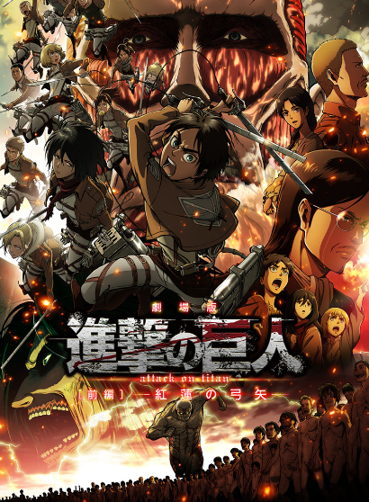

}
}
TEMPORADA 1
La primera temporada de la serie de televisión de anime Shingeki no Kyojin fue producida por Wit Studio de IG Port y dirigida por Tetsurō Araki, y cubre los primeros arcos narrativos (capítulos 1-34) del manga original de Hajime Isayama. Shingeki no Kyojin está ambientado en un mundo donde la humanidad vive dentro de ciudades rodeadas por enormes muros debido a los Titanes, seres humanoides gigantes que devoran a los humanos. La historia sigue las aventuras de Eren Jaeger, y sus amigos de la infancia Mikasa Ackerman y Armin Arlert, cuyas vidas cambian para siempre después de que un titán colosal traspasará el muro de su ciudad natal. Jurando venganza y para recuperar el mundo de los Titanes, Eren y sus amigos se unen al Cuerpo de Exploración, un grupo de élite de soldados que luchan contra los Titanes.
TEMPORADA 2
La temporada sigue a Eren Jaeger y a sus amigos del 104° Cuerpo de Entrenamiento que recién han comenzado a convertirse en miembros de pleno derecho del Cuerpo de Encuestas. Después de luchar contra la Titán Hembra, Eren no encuentra tiempo para descansar mientras una horda de Titanes se acerca a la Muralla Rose y la batalla por la humanidad continúa. Mientras que el Cuerpo de Exploración corre para salvar el muro, descubren más sobre los Titanes invasores y los oscuros secretos de sus propios miembros.